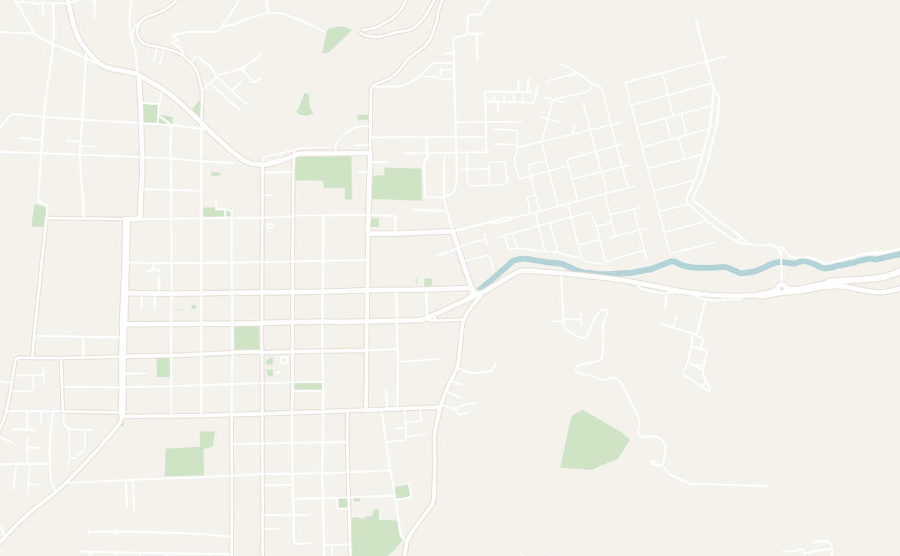
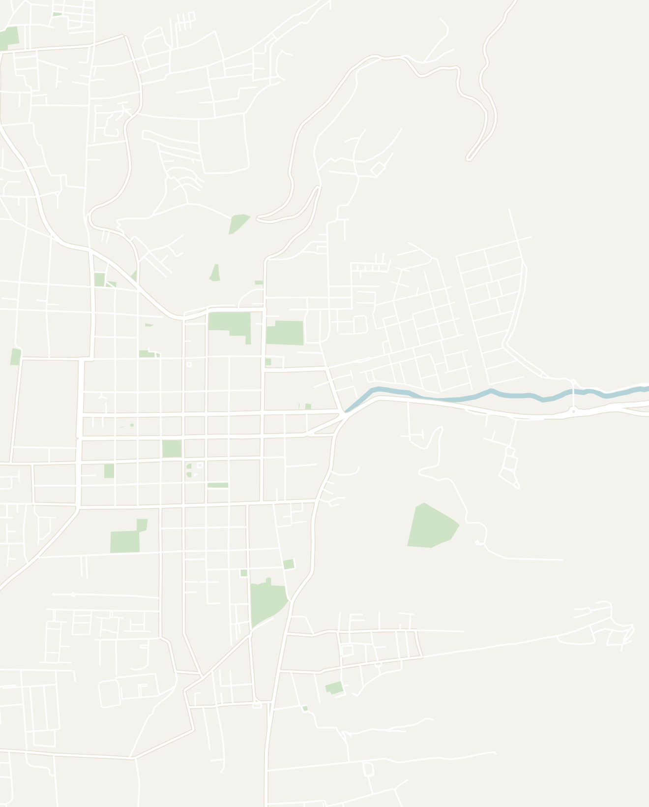
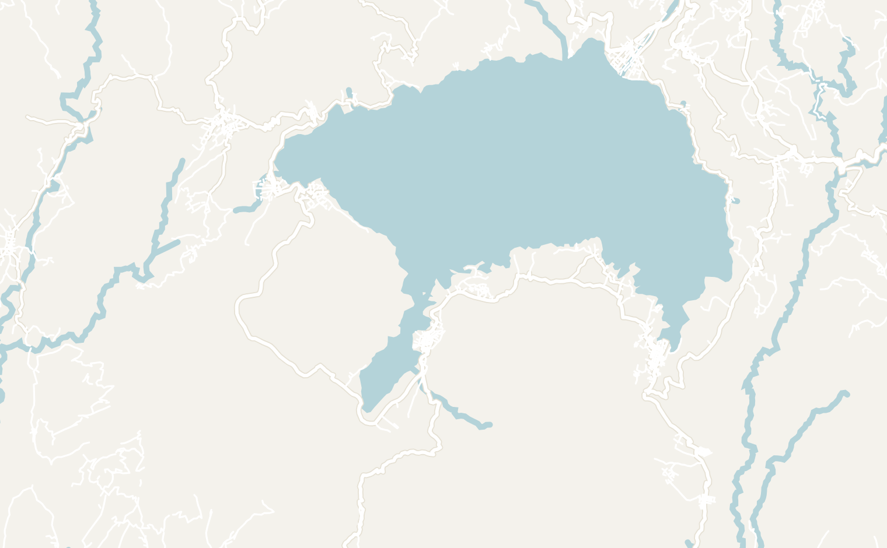
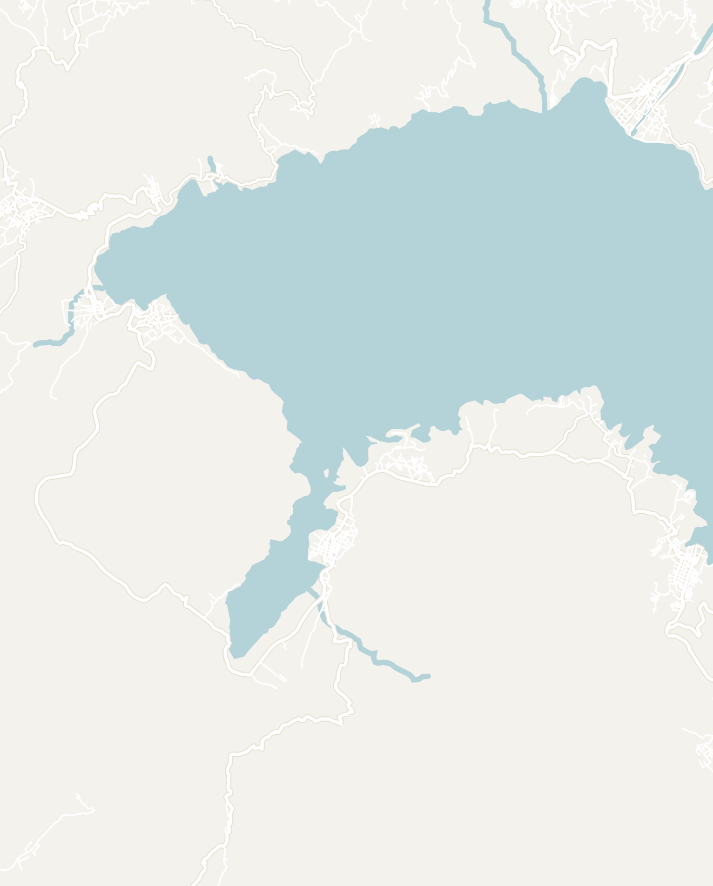
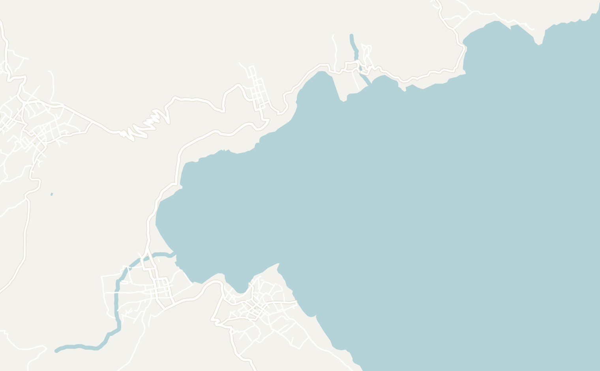
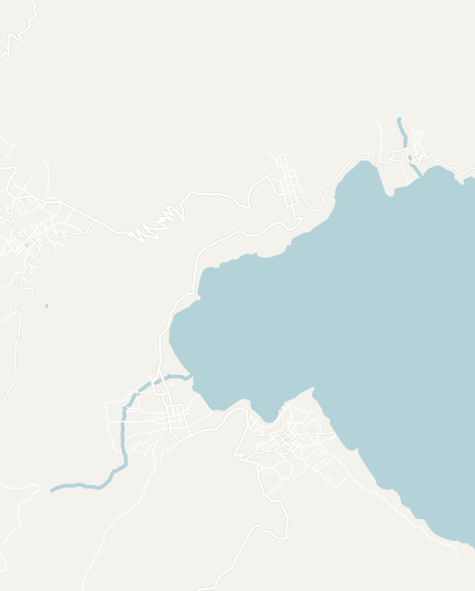

General
Guatemala is a small Central American country that pleasantly surprised me and quickly became one of my favorite countries in Latin America. It punches far above its size with its vibrant Mayan culture, active volcano hikes, a crater lake ringed by villages, and charming Spanish colonial cities. What sets it apart from its neighbors is how present Mayan culture still is here in the indigenous languages spoken, cuisine and style of dress. You'll notice women walking around in traditional brightly embroidered blouses with black skirts as everyday clothing.
Visit Antigua, a gorgeous historical city surrounded by volcanoes, embark on the Acatenango overnight hike, spend a few days relaxing on Lake Atitlán and then head to the black-sand surf town of El Paredón. If you have more time, continue north to the bright turquoise waterfalls of Semuc Champey and the magnificent Mayan ruins of Tikal in the far north. As a backpacker, Guatemala was one of my favorite destinations, balancing nature, culture and a lively backpacking trail with many people on month-long Central America trips.
Despite being a relatively small country, Guatemala can be very slow to get around. Most of the highlights are either in the northern part of the country bordering Belize or in the southern half of the country near Guatemala City. Plan to spend 2 weeks in Guatemala to visit the highlights and 3 weeks for a more complete trip.
- Getting around
- Flights — Guatemala City has the most international connections so you'll likely fly in here. The city is known to be dangerous with limited tourist attractions so most travelers immediately take a shuttle to Antigua after landing. There are direct shuttles to Antigua from the airport that take about 1.5 hours depending on traffic
- Tourist shuttles — in my opinion, this is the best way to get around the country if it is your first time here. There are tourist shuttles between all major tourist destinations, including Antigua, Atitlán, Chichicastenango and El Paredón. They are convenient, especially if you're traveling with a lot of luggage since they offer door-to-door service picking you up at your accommodation and dropping you off directly at the next one. They run about $15 - $25 each and you can either book them on Gekko Explorer or directly with your hostel. They are slower than the websites suggest, so build in buffer time and never book anything tight on the same day
- Local transport — two forms of local transport you'll encounter in Guatemala are chicken buses and lanchas (small motorboat taxis used on Lake Atitlán). Both are dirt cheap, gloriously painted and slow, and worth doing once for the experience even if you take shuttles the rest of the time. Make sure to keep small bills on hand. Finding change is difficult and drivers will often refuse to accept large bills
- Traffic — I wouldn't normally complain about traffic as things generally take longer in developing countries. However, traffic in Guatemala was horrible, especially around Guatemala City. Drives can take up to twice as long as the estimates on Google Maps. Keep this in mind when planning and never book a tight connection just in case
- Money — the official currency is the Guatemalan quetzal. Guatemala is a relatively affordable country. However, it is more expensive than its neighbors due to a well-established tourism industry. Expect meals in tourist towns like Antigua to cost $6 - $8 and organized tours to run $40 - $50 per day
- Food — Guatemalan cuisine is one of my favorites in Latin America. It is hearty, cheap and super underrated. My favorite dishes were Pepián de Pollo, the national dish and a rich dark chicken stew; hilachas, a shredded-beef tomato stew; and Churrasco Guatemalteco, a plate full of Guatemalan grilled steak. Most meals are served with a thick homemade corn tortilla, different from what you would find in Mexican cuisine. I would encourage you to go to small family-run comedores where locals eat lunch. They often have a Menú del Día, a really cheap multi-course meal
- Weather — Guatemala has a variety of different climates ranging from the high-elevation mountain towns to the tropical beaches along the coast. The altitude (Antigua and Atitlán both sit around 1,500m+) means cool evenings and stronger sun than you expect, so bring a warm layer and sunscreen. Your trip will likely cross through these different climates so pack accordingly
- Safety — telling anyone at home that you're going to Central America inevitably brings up the question "is it even safe for tourists there?" Guatemala deals with considerable security issues associated with gang violence. However, the government is heavily invested in protecting tourists. I always felt safe while in the country, but I never ventured too far off the tourist trail
- Fun Fact: Antigua (one of the most touristed cities in the country) is heavily patrolled by police. There is also a security system of 500 live cameras and emergency callboxes on almost every corner throughout the city. If you're ever in trouble and press one of the boxes, it will turn on all 500 cameras and police will swarm the area
- How long to stay — 10 to 14 days comfortably covers the highlights of southern Guatemala including Antigua, the Acatenango hike, Lake Atitlán and El Paredón without rushing. This was my trip in late 2025 and I highly encourage you to give Lake Atitlán and Antigua longer than you plan to. If you have more time, you can head up north to Semuc Champey and Tikal.
- If you're on a longer Central America trip, Guatemala pairs naturally with El Salvador and Nicaragua to the south (read more in my detailed guides)
Antigua
3–5 days recommendedAntigua is one of the most beautifully preserved colonial cities in Latin America with cobblestone streets, brightly painted facades and a perfect volcano framing almost every view. It's the natural base for everything in Guatemala, and a lovely place to spend a few days between excursions. Antigua is layered in history as the former capital of Spanish Central America until an earthquake flattened it in 1773.
I spent an entire week working from here and it quickly became one of my favorite towns in Latin America. Antigua is heavily touristed and the center of town is covered with restaurants and activities for tourists. If you have any concerns about safety in Guatemala, this is the perfect town to ease into the country. It was the perfect mix of comfort, adventure and a great place to begin your journey in Guatemala! I would recommend spending 3 to 5 days here and slowly taking in the sights.
- Arch of Santa Catalina — the famous arch that you've probably seen all over social media. This canary-yellow colonial archway perfectly frames the cone of Volcán de Agua behind it. Come early in the morning before the haze and crowds build or at golden hour when it's lit up. The cobbled street beneath it on 5a Avenida Norte is lovely to wander
- Parque Central de Antigua — only a couple blocks away from the famous arch is the central park of Antigua. It is a lush green park surrounded by well-preserved Spanish colonial architecture and a great place to orient yourself before exploring the town. Antigua is very walkable and most key sites are located less than a 10-minute walk away from here
- Cerro de la Cruz — if you're looking for the best views in the city, take a 30-minute walk uphill from the center of town. The path is clearly marked and navigable using Google Maps. At the top you'll find a massive stone cross and the best panorama in Antigua, looking back down the length of the city with Volcán de Agua filling the sky behind it.
- This was the moment I realized Antigua is completely encircled by mountains. Go in the morning before the haze builds. Keep in mind that the path had a bad reputation for muggings in the past, so tourist police now patrol it during daylight hours. It is safe now, but don't walk up alone at dawn or after dark and leave anything valuable back at your hotel
- The Churches — as the former Spanish colonial capital of Central America, Antigua is covered in an array of impressive churches. Some of the highlights include:
- Iglesia de La Merced — located just a block away from the Arch of Santa Catalina is the most ornate facade in the city, canary yellow and covered in white stucco detailing. This church has been fully restored and operates as a working church to this day. You can pay the small extra fee to walk into the cloister ruins behind, where the large Fuente de los Pescados is located. In my opinion, this is the best church to visit in Antigua
- San Pedro Apóstol — roughly a 25-minute walk south of the main square lies San Pedro Apóstol. The building has a similar yellow facade and white molding as Iglesia de La Merced. I randomly wandered inside and learned that the building doubles as both a community center and church. Locals were waiting in line for basic healthcare and other literacy services. It was really cool to see the church helping out the community and to learn how integral the church is to daily life in Guatemala
- San Francisco the Great Sanctuary — a working church attached to the ruins of the Convento Santa Clara monastery. It is also the burial place of Hermano Pedro, the first saint in Central America, and Guatemalans come to leave notes and flowers at his tomb. It is well worth a combined visit to the ruins next door
- The ruins — a devastating earthquake destroyed Antigua in 1773. As the former Spanish capital of all of Central America, Antigua was covered in impressive architecture. Today, the town is mostly rebuilt with colorful buildings. However, you can still explore a variety of ruins across the city. The roofless churches and convents are a unique sight to explore to get a sense of the history and a great location for photography
- San José Cathedral — located right on the eastern edge of Parque Central is the impressive white facade of a cathedral that still functions today. The full cathedral before the earthquake was massive, taking up most of the surrounding blocks. Due to the mineral wealth the Spanish extracted from Guatemala, the architecture in Antigua once rivaled the Spanish cities in Europe
- You can venture off to the side entrance and explore the roofless courtyard that once housed the collapsed domes. They now open to the sky with remnants of their former glory including many columns, inscriptions and even a crypt underneath that you can explore. These were my favorite of the ruins in the city and are quick to explore
- Convento Santa Clara — a convent founded in 1699 that was also destroyed by the earthquake. The convent was never rebuilt so what survives is two levels of arches around a garden courtyard with a fountain in the middle. It is connected to San Francisco the Great Sanctuary. Convento Santa Clara is located off the main area of Antigua and is fairly quiet. Entry is about Q40 and half an hour is plenty
- Tanque La Unión — a long colonial washbasin on a quiet plaza at the east end of town, still used by local women doing laundry. Travel guides online will tell you this is a "must-do", but it is only worth a quick 5-minute stop for photos if you're passing by
- El Mercado Central — the local open-air market on the west side of town, where the locals in Antigua actually shop. It is a typical Latin American market where you can find produce, textiles, secondhand clothes, and a row of comedores at the back serving the cheapest lunch in the city. Spend a couple hours exploring if you want a taste of local life rather than the more touristy areas in Antigua
- Sumpango Kite Festival (Nov 1) — Día de los Muertos is a famous holiday celebrated throughout Central America and each country has its own set of traditions. Growing up in California, I was familiar with the Mexican traditions. However, the tiny mountain town of Sumpango hosts a completely different Día de los Muertos celebration
- Every year on November 1st, people from all over Guatemala head to this small town to witness the local kite festival. The sky is covered with kites of all sizes ranging from tiny kids' kites to huge three-story tall kites flown by a team of 4 to 5 men. You can also visit the colorful cemetery nearby where families picnic and drink among the tombstones. Guatemalans have a completely different relationship with death: it is treated more as a celebration of life than a tragic event like in Western countries
- It is worth planning your trip to Guatemala to line up with Día de los Muertos celebrations which typically run from October 31st to November 2nd. I booked a tour with the hostel I was staying at called Tropicana. You can visit the festival independently as well since Sumpango is only ~45 minutes away. However, it was nice to have a guide to explain local traditions, and taxis often upcharge significantly for the festival
- Chichicastenango — if you're looking to experience a more authentic side of Guatemala, you can head two hours away from Antigua to a small mountain town called Chichicastenango. It is home to one of the largest and oldest indigenous markets in Central America, which has been running continuously for over 500 years. It was a bit surreal to think that Mayans have been shopping at the same market that I was exploring. The town is much less touristed and you'll begin to see the Mayan influence come out with local women wearing traditional dress
- Getting there — most people come on a day trip from Antigua (2 - 3 hours away) or Lake Atitlán (1.5 to 2 hours away).
- I booked a shuttle from Antigua through my hostel called Tropicana for $20. The ride was fine except the return shuttle never showed up! After a few hours of waiting, I ended up negotiating with a bus driver for a ride back in Spanish and the hostel refunded me
- You can also access the town using chicken buses. They only cost a few dollars, but the schedules are a bit unpredictable. I would recommend taking this route for the full local experience
- What to Do
- Plaza y Mercado Santo Tomás
- Begin your trip around Chichicastenango with a visit to the cathedral at the center of the market. The Spanish cathedral here was built right on top of a Mayan pyramid. In fact, the steps leading up to the cathedral are the original steps from the Mayan pyramid which was pretty cool. While I was there, locals randomly started setting off fireworks on the steps which was quite the show
- Next, explore the market itself, which takes over the whole plaza. The market only occurs on Thursdays and Sundays so plan your trip around them. Wander around the market to browse the local textiles. As you walk further in, it turns into produce, livestock and household goods for the surrounding villages. There are also a ton of cheap food stands throughout the market where I had an amazing meal at a local spot for only ~$3
- Cementerio de Chichicastenango — the next highlight is the cemetery on the hill above the market. In Guatemala, funerals are treated more as a celebration of life and tombs are painted in bright blues, yellows and pinks, the color chosen by the family. Mayan ceremonies are still held at the shrine at the top and you will often smell copal burning. It was a fascinating place to walk around. It is fine to take pictures, but keep a respectful distance from the locals
- Hotel Santo Tomas — a beautiful hotel in the center of town with two majestic colonial-style courtyards full of plants, a pair of fountains and parrots. There is also a popular restaurant with seating in the courtyard. It is also where most of the tourist shuttles meet, so it's worth a stop if you're passing by
- El Portón — my favorite restaurant in Antigua! I loved it so much that I went here three times. It is a cozy Guatemalan cafe with traditional decorations and some delicious food, and it's worth multiple visits for traditional Guatemalan stews with real depth. Try the Pepián, the national dish consisting of a rich chicken stew served with thick purple corn tortillas, or the estofado de tres carnes, a stew made of steak, pork and chicken in the same rich base
- Rincóncito Antigüeño — located right across the street from El Portón, this restaurant is one of the most popular restaurants in Antigua. They are famous for their rotisserie chicken with potatoes. It was a great, affordable meal, but make sure to go during off hours when it is not busy since the line gets really long
- Café Sky — a three-story cafe located on a rooftop with the best view in town. You can see the entire colorful town below and the volcanoes surrounding the area. Expect it to be a bit pricier due to the view. I really enjoyed their huevos rancheros with refried black beans
- Casa de Sopa — a relaxed, unpretentious restaurant in Antigua that makes really good traditional Guatemalan soups and stews. I recommend getting the hilachas: a shredded beef tomato stew served with avocado, rice and warm tortillas that tastes like it has been simmering all day
- Dobladas San Carlos — a cheap local fast-food spot that is popular among locals. It is extremely cheap and serves crunchy, deep-fried shredded-beef tacos with cabbage slaw and chips. Unhealthy and very good
- Antigua Bar Crawl — this was one of the best bar crawls I went to in Central America. It runs most nights of the week and was super social. I went on Halloween night and they took us to a bunch of bars around town. It is a great way to meet people if you're traveling solo
- Café No Sé — an atmospheric speakeasy in Antigua that is a bit creepy. It is small and cozy with dim, candlelit lighting. In the back room, you'll find a creepy shrine to Maximón (the Mayan-Catholic folk saint) and a hidden mezcal bar. There was a government-imposed curfew when I was in Guatemala and they were running a secret after-hours party here
- Antigua Brewing Company — a lively rooftop terrace right in the center with a solid lineup of local craft beers on tap and one of the easiest sunset views in town, looking out over the tiled roofs to the ring of volcanoes. You can even see Fuego smoking in the distance on a clear evening. The food is pretty good too so it is a great, low-key spot for a drink before dinner or the bar crawl
- Impact Hub Antigua — a co-working spot embedded on the rooftop of Antigua Brewing Company. I bought the day pass and worked from here for a few days. Despite being embedded inside a brewery, the location is very quiet during the day and the Wi-Fi was good enough for video calls. It wasn't the best co-working spot since it was just a few desks with outlets set up on the roof of the brewery
- Tropicana Hostel — this is the most social hostel in town. Located right in the center of town, they help plan most of your excursions (including the volcano hike) and you can even book online. The highlights are the rooftop restaurant and bar and they run the bar crawl out of here. It is fun for a couple days. However, it is very loud and the dorms are big and a little run-down, so I'd recommend moving somewhere else if you're looking to sleep
- Flore Hostel — after a couple of nights in Tropicana, you'll probably want to move to a quieter hostel. I decided to move to Flore Hostel which was the opposite: clean, quiet and relaxed. They offered a great free breakfast, and the common areas and rooftop were beautiful. I worked out of the common areas and the Wi-Fi was great
- Hotel Las Piletas — this is a really cheap hotel that I spent a night in when I was looking for a private room to recover after the Acatenango Volcano Hike. It only cost $20 a night and was very basic and a bit run-down. The Wi-Fi only worked when the windows were open! I would only recommend this hotel if you're looking to save money


Double-tap to open in Google Maps
Acatenango Volcano Hike
2 days · 1 nightHiking Acatenango may be one of the most memorable experiences in all my travels! After a grueling day of hiking, it was absolutely surreal to hike all the way up to an actively erupting volcano. We were only 400 meters away from the eruption and there was lightning going off on all sides of the volcano. The volcano is highly active and erupts roughly every 15 minutes.
The hike is only 12 to 14 miles (19 to 22 km) round-trip over the course of 2 days. The kicker is that there is 5,000 to 7,300 feet (1,500 to 2,200 meters) of total elevation gain. Most of the hike you'll be climbing uphill or walking downhill so it is pretty high intensity. It is tough on the knees, but I feel like most people with a decent level of fitness can do the hike. The hike breaks down into 3 basic sections:
- Main ascent up Acatenango to base camp (4.5 miles each-way) — this is where you'll have dinner and spend the night. Don't be fooled by the distance! This hike is quite brutal and most of my group decided to stop here for the night. You'll have a view of Volcán de Fuego directly from the base camp
- Volcán de Fuego hike (2.5 to 4.0 miles or 3 to 6 km round-trip) — the second leg is optional and most people from my group decided to skip it (only 8 out of 40 people in our group did it!). This section of the hike is a descent from base camp into a valley and then a climb up to Fuego's ridge (an extra 1,500 to 1,800 feet of gain). The sun started setting during this time and we had a magical golden hour while descending into the valley above the clouds
- No matter how tired you are, I highly recommend doing this hike since it is the hike that takes you right up to the volcano. Nothing matches the feeling of standing 400 meters away from an erupting volcano. It is considered an honor to complete the Volcán de Fuego hike and there is even a special ceremony and necklace given to those who complete the full hike
- Acatenango Summit Sunrise Push (1.5 to 2 miles) — an early 4AM wake-up for a short hike to the viewpoint overlooking the sunrise. This is also optional and the hike starts in the dark. You'll get to the viewpoint and watch as the sun rises behind the volcano. There was a beautiful orange glow the morning we went
For the two-day hiking experience, expect to pay $110 to $350 depending on which tour you book. The price includes hiking guides, food and lodging for the night with the lodging differentiating how much the total tour costs. I booked through Tropicana, had a wonderful experience and met some amazing people. I decided to be "an adventurous backpacker" and book the cheapest option. The sleeping situation was horrible (more on that later) so I recommend booking the VIP Cabin option for only $15 more.
- Hiking boots or trail runners with grip: much of the trail, and especially the optional Fuego side-hike, is loose volcanic ash, gravel and rock that slides. Trekking poles really help (especially if you have weak knees) since the gravel is pretty loose and there is a lot of sliding. Also worth packing: a power bank, plenty of water, snacks, and cash to tip the hard-working guides and porters at the end
- Warm layers, and more than you think: base camp and the summit are freezing after dark and at dawn, often near or below freezing with a biting wind, a shock after warm Antigua. Renting is probably the best option as you will probably not want to carry around cold weather gear for the rest of your trip in Guatemala. Gear rental is offered by the hostel for relatively cheap
- Porters are also available for those who don't want to carry their bags. However, some people in my group had porters who were as young as 10 years old, which was sad to watch. I would recommend skipping the porter and just packing lightly
- Before you leave for the hike, everyone meets in the lobby of Tropicana. The hostel provides water, meals and snacks to pack and rents hiking and cold-weather gear. It might seem excessive to rent cold weather gear while you're in warm Antigua, but the summit is honestly freezing so make sure you get a warm jacket, gloves, headlamp and beanie. Everyone is excited for the journey and busy repacking their stuff. You can safely leave your larger bag at the hostel during the 2-day hike.
- The journey starts with a short, bumpy hour-long bus ride from Antigua to the trailhead at Soledad. You set off mid-morning in a group of roughly 40 with your guides. The ascent is a relentless, steep four-to-five-hour grind, starting in loose volcanic soil before easing into forest switchbacks. Take it slow, as the altitude (climbing past 3,600m) makes it far harder than the distance suggests. You hike as a group so you'll end up having to wait for the rest of the group anyways.
- About two-thirds of the way up, you break through the cloud line, and base camp perches on the ridge above the clouds with a direct, jaw-dropping view across the valley to Volcán de Fuego erupting every 15–20 minutes. We arrived at base camp around 4pm and took a break before a small group of us (8 of the 40 people) decided to embark on the additional Fuego hike
- I was already very sore before starting the Fuego hike, but wanted to make sure I did it based on my friend's recommendation. It took an extra ~6 hours from camp and was one of the hardest hikes I've done. It started with a steep drop into the valley. The sun was setting so we had an amazing golden hour. As the sun started to set, we embarked on a brutal, slippery climb in the dark. The highlight was finally reaching the top and walking along the ridgeline all the way up to within ~400m of the erupting crater. There was a strong wind that was freezing cold at night so I was glad I rented all the cold-weather gear. We spent half an hour just watching the volcano explode every 15 minutes from that close, with lightning behind it, and it was worth every second of the hike
- We headed back to camp to enjoy a hot dinner with hot chocolate, marshmallows and a fire. The food tasted incredible after that climb. We were all exhausted from a long day of hiking and chatted a bit before heading to bed early in preparation for an early rise the next day. I booked the "Flashpacker Cabin". It was essentially a shed with two planks lined with mats and sleeping bags. There were 8 people on the top and 8 people on the bottom. The shed was not wide enough to fit 8 people so we were all overlapping and you would constantly wake up in the middle of the night. I highly recommend booking the premium option as you'll want a good night of sleep after a full day of hiking!
- We were woken around 4am for the final push to the true summit. It was a cold, hour-long climb in the dark that actually felt easy compared to all the hiking we did yesterday. You head up by headlamp to the rim of Acatenango's own dormant crater at nearly 4,000m. It's more of a scramble up loose gravel than a hike (two steps up, one sliding back), and you reach the top just as the sky starts to lighten
- We spent the next hour or so walking the caldera rim at dawn. There was the dormant crater in the center, Fuego erupting below and an orange-purple sunrise behind it. It was one of the best views I've seen anywhere. The guides had to push us all to get off the mountain and head back to camp for our descent
- After a quick breakfast at base camp, you pack up and head down. It is a 3 to 4 hour descent (much faster on the way down) back through the forest, jungle and finally corn fields to the trailhead. You'll return to Antigua by early afternoon, filthy, exhausted and grinning; plan a very lazy rest of the day with the new friends you made along the way!
Lake Atitlán
3–5 days recommendedLake Atitlán is a vast volcanic crater lake surrounded by mountains and a number of small towns. These towns have existed since early Mayan times and each village has its own character. In fact, the villages all developed independently and different Mayan languages are actually spoken in each town.
Today, the towns are popular among tourists and you can find everything from quiet, relaxing towns to disconnect to hippie spiritual retreats to raging party boats depending on the town you choose. Lake Atitlán is a great place to explore for 3 to 5 days. This will give you enough time to visit a few different towns. You can easily get between the towns using the system of lanchas, which are public wooden motorboats that operate as the "public bus" and regularly run routes around the lake. I would recommend basing yourself in San Pedro La Laguna and making day trips to the other towns.


Double-tap to open in Google Maps
- The shuttle from Antigua is roughly 4 hours. You can easily book this online at bookaway.com or through any hostel. I took a ride at sunset and the ride was absolutely gorgeous. There were winding roads up and over the highlands before the lake suddenly opened up below you. Most transportation methods will likely take you to the largest town on the lake called Panajachel
- Lanchas are the best way to get between the villages. They are long, low wooden motorboats that serve as the buses of Lake Atitlán. They run regular routes, zipping between all the lakeside villages. They're relatively cheap at $2–5 per ride depending on the distance and leave when full rather than on a schedule. The ride is gorgeous, especially crossing beneath the volcanoes at sunset. Crucially, the last boats run around 5–6pm, so keep an eye on the time or you'll be stuck!
- Best towns to visit — each town has its own character so do some research ahead of time to figure out which ones suit your personality the best. Depending on how much time you have, base yourself in 1 to 2 towns and use the lanchas to take short day trips to the others. All of the towns are tiny. They are easily walkable and can be explored within a few hours
- San Pedro — the most lively town on the lake and best place to base yourself (and where I spent almost all of my time on the lake). It has the most infrastructure, accommodation options, restaurants, bars and the famous boat party. Lanchas run from here to everywhere else constantly. The town is really two towns: the waterfront strip is backpackers, and the village up the hill is entirely Mayan and worth the walk
- San Juan — the prettiest village on the lake and only about ten minutes from San Pedro by tuk-tuk, making it an easy half day trip. The town is known for its art scene, with steep streets covered in murals and weaving cooperatives. Don't miss the Mirador above town. It is quieter and cleaner than San Pedro
- Panajachel ("Pana") is the main gateway and transport hub, a busy strip of shops, ATMs and a craft market where the shuttles and boats connect. It is more modern than the rest of the towns and you'll likely pass through here. It's worth a single night at most, since the more characterful villages are a short lancha ride across the water
- San Marcos — it is the lake's hippie village with tons of yoga retreats, cacao ceremonies, vegan cafes and meditation retreats built into a jungly hillside. It is quite a posh, rich-hippie vibe and there is a really pretty main street selling everything from incense to clothes to jewelry. Whether or not that appeals to you, the nature reserve at the edge of town has the cliff jumping platform and the cleanest swimming on the lake, which is reason enough to visit for an afternoon
- Santa Cruz — the most secluded of the main villages. It is only reachable by boat and stacked up a steep hillside above the water. It is the quietest base on the lake and home to the famous Free Cerveza hostel, which is exactly what it sounds like (free beer!). My friends who went to Free Cerveza said that it was one of the best hostel experiences you can find anywhere. It is the main reason to go to Santa Cruz, but books out weeks in advance
- Indian Nose sunrise hike — the most famous hike in the area. The hike is done at sunrise and has a pre-dawn start around 3:45am. It was pretty easy at less than 2 miles round trip. The views on the way up are nothing spectacular, but at the top there is a beautiful panorama over the entire lake where you can see every surrounding volcano and all the towns. The scale of Lake Atitlán finally makes sense from up here and you'll get a beautiful orange and purple glow coming off the lake if you're lucky. It is best to organize through your hostel and expect to pay ~$15
- San Juan La Laguna (lancha or tuk-tuk day trip) — a small village where you can spend your time wandering the colorful streets admiring the murals, shopping for art and having a traditional Guatemalan breakfast. Make sure to take a tuk-tuk up to the painted-deck Mirador viewpoint
- Mirador Kaqasiiwaan — one of the best viewpoints on the lake and the main highlight in San Juan. It consists of painted decks and swings built out over the hillside with the whole lake and the volcanoes behind them. You can either walk up the hill or take a tuk-tuk up and walk back down through the murals. It costs a couple of dollars to get in and it is the easiest big view on the lake if you are not getting up at 3:45am for Indian Nose
- San Marcos La Laguna (lancha day trip) — the lake's famously new-age, hippie village, all yoga studios, cacao ceremonies, vegan cafés and meditation retreats tucked into a jungly hillside. Even if that's not your thing, it's worth an afternoon for the lovely lakeside nature reserve, where there's a cliff-jumping platform (with a lower ledge for the faint-hearted) and easy swimming in some of the cleanest water on the lake. A short lancha ride from San Pedro
- Dive Platform — a 12m wooden jumping platform built out over the water in Reserva Natural Cerro Tzankujil, with a lifeguard who talks you through it. Entry to the reserve is around Q25 and the walk in runs through a cactus garden with the lake opening up below you. There are lower ledges of a few meters to jump off if 12m is more than you want. The water here is the cleanest on the lake and worth getting into even if you never jump
- Boat party — Lake Atitlán's legendary afternoon party boat and an institution on the backpacker circuit: a few hours of drinking, music and swim stops cruising the lake with the crew you've been meeting all week. It is organized by Mr. Mullet's Party Hostel and costs ~$25–30, with drinks included. It typically runs on Tuesday and Friday, so check the schedule when you arrive and plan your San Pedro nights around it
- Pupusas Salvadores — my favorite place to grab food on the lake. It is a tiny street stand right on the main strip in San Pedro turning out Salvadoran pupusas for about a dollar each. The stand is run by 3 ladies who cook everything in front of you and serve it with a variety of sides, including curtido. It is the cheapest good meal in town and the obvious stop on the way home from a night out
- Shanti Shanti — a mellow café with a wooden terrace hanging right over the water, and the go-to in San Pedro for a slow breakfast, a smoothie or an afternoon of remote work with the lake and volcanoes in front of you. It has good coffee, decent Wi-Fi and a relaxing view. I ended up here three mornings in a row
- No Hay Deer — a tiny, British-run smash-burger joint that turns out the best burger on the lake, plus loaded fries and the odd craft beer. It's a great, cheap, no-fuss dinner when you want something familiar and hearty after a few days of comedor food
- Sublime — the main nightlife spot in San Pedro, a sprawling open-air, multi-level bar right on the water with DJs. There are cheap drinks and fire shows that draw the backpacker crowd. It's where most nights on the lake end up
- Mr Mullet's — the classic party hostel on the lake, and the beating heart of the San Pedro backpacker scene. It runs the bar crawl, sells the boat-party tickets, hosts beer-pong and karaoke nights, and has a lakeside deck. It's an easy social base if you're traveling solo and want an instant crew, and a poor choice if you're after an early night. It was one of those places that I enjoyed spending 2 nights and was so ready to leave on the last day. San Pedro also has plenty of cheap Airbnb options for a quieter stay


Double-tap to open in Google Maps
El Paredón
2 days recommendedEl Paredón is a tiny black-sand surf town of about 1,500 people: no sights, no downtown, just beach, pool, surf and the most laid-back vibe in Guatemala. I didn't expect to go here, but ended up getting dragged out by my hostel friends and boy am I glad I went for a couple days! A couple days in El Paredón was the perfect reset after the intensity of Antigua and Atitlán.
The town is pretty simple: the beach will not blow your mind, you lounge and surf during the day and then the town heads down the beach to party at night. The surf is really beginner-friendly and every hostel runs lessons for a few dollars, and the sunsets over the black sand are the best in the country. I wouldn't say this town is a must on your trip. I would only go if I had extra time or really wanted to relax by the ocean. Two or three nights is the right amount of time since there isn't much to do in town.
- Surf — El Paredón's whole reason for being: a consistent, uncrowded Pacific beach break over black sand that works for everyone from first-timers to intermediates, with warm water and no rocks. Every hostel rents boards and runs cheap group lessons, and a dawn or sunset session is the most popular time to go. Be aware that the currents and shore-break can be strong, so listen to the local advice on where to paddle out
- El Paredón turtle sanctuary release — the village runs a small community sea-turtle hatchery. In season, you can join a dawn release, walking to the beach to watch newly hatched turtles scramble down the sand into the ocean for a small donation. Ask your accommodation for details on when to show up (it was 5:30am for me, but varies throughout the year). It's simple and quick, but a pretty moving way to start the day, and the early wake-up lines up nicely with a sunrise surf
- Cocodrilo — the main bar-restaurant and unofficial social center of El Paredón, sitting between the beach and a pool, and a step up from the usual scrappy surf-hostel food. It's the reliable spot for a good breakfast before a surf, a proper dinner, and sunset drinks as the town gathers. It is a relaxed, friendly place that anchors the tiny village's day and transforms at night when the whole town gathers to dance to reggaeton
- Spaceship Restaurant — I didn't expect to see a spaceship as I was walking down the dirt road of a Guatemalan surf village! This restaurant is a full-size concrete replica of a Star Wars Star Destroyer dropped in the middle of a tiny surf town. It is a really fun place to have lunch. The whole staff is dressed in Jedi robes. It is a bit expensive by Guatemalan standards, but the drinks and food were actually really good
- Miguelito's — a rougher-around-the-edges local bar on the edge of the village that gets lively on weekends and offers a more local night out than the hostel scene, with cheap drinks and dancing. It's good fun with a group, but it's off the main strip, so keep an eye on your belongings and head back together rather than wandering off alone late
- The Driftwood Surfer Beach Hostel — where I stayed and an extremely social hostel. The whole hostel sits right on the main beach and is built around a big pool that everyone spends the day around. There is also a volleyball court out front that fills up around sunset and a small calisthenics gym. They run really cheap surf lessons
Other Places to Consider
These notes cover the classic highlands to coast loop, which is what most people do on a first trip to Guatemala and what fits comfortably into two weeks. Guatemala is small but slow to move around. Here are some additional locations to consider if you have more time:
- Tikal & Flores — Tikal is the country's greatest Mayan ruins with vast temple-pyramids rising out of the jungle in the far north. The best way to visit is to come from Belize or fly into the pretty island town of Flores.
- Semuc Champey — a staircase of turquoise limestone pools cascading over each other. It is hidden deep in the central jungle, and one of the most beautiful spots in the country. You can swim in the pools, hike up to the viewpoint, do some river tubing and swim into candlelit caves nearby. Semuc Champey is quite remote, down long, rough roads (often a bumpy ride in a truck bed). You can get there by going to Lanquín which is a small jungle town located a 7-hour drive from Antigua
- Quetzaltenango — unfortunately, I only found out about Quetzaltenango after arriving in Guatemala, but it will 100% be a stop on my next trip to the country. It is Guatemala's second-largest city and is the base for the best hiking in the country: the Santa María and Tajumulco volcanoes, the Fuentes Georginas hot springs, and the three-day trek across the highlands that finishes at Lake Atitlán. It is also where people come to study Spanish, since it is far less touristed than anywhere else in this guide and you are forced to actually use it
- Río Dulce & the Caribbean coast — a spectacular boat trip down a jungle river gorge, past hot springs, birdlife and a colonial fort, to Livingston, a town reachable only by water. It is home to the Garifuna, an Afro-Indigenous people with their own language, drumming and cuisine. It's a completely different, Caribbean side of Guatemala, well off the main highland circuit and worth the detour for how distinct it feels